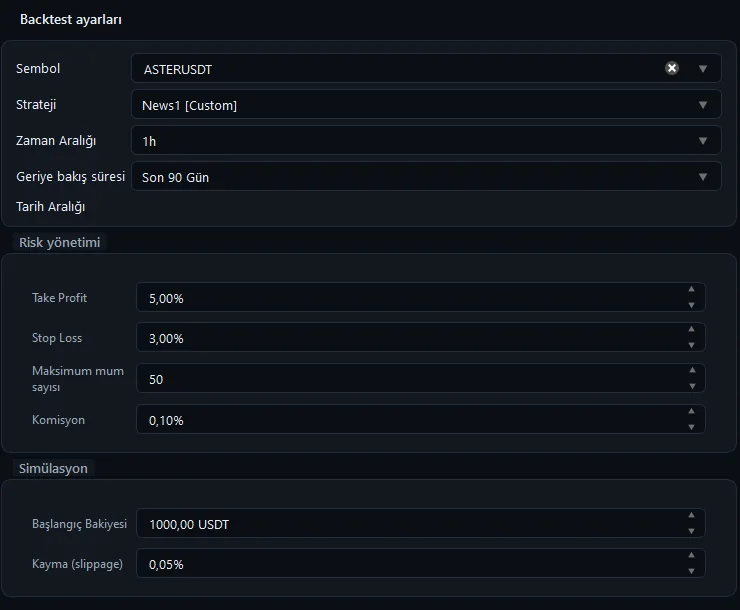
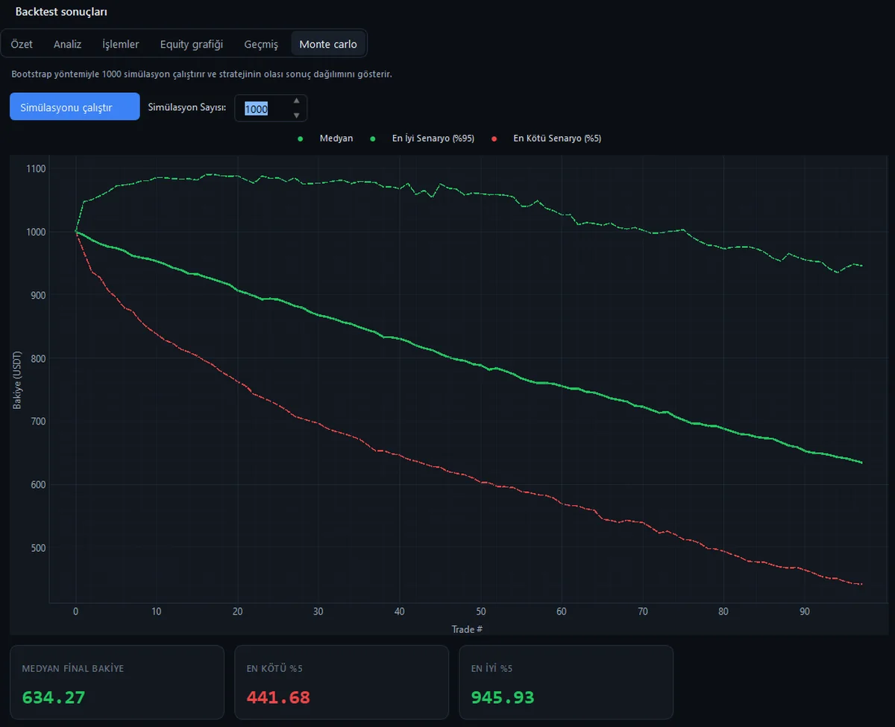

Бэктест
Портфельное Бэктестирование
Проверьте стратегию на исторических данных с учётом комиссии и проскальзывания до реальных денег. Изучите результат со всех сторон: сводка, анализ, сделки, график эквити и Монте-Карло.

Реальный экран приложения, снят в виртуальном режиме.
Настройте, запустите, увидьте честный результат
Результат бэктеста может быть хорошим или плохим; цель — узнать это без риска для реальных денег.
Символ, стратегия и издержки
Выберите символ, стратегию, таймфрейм и глубину истории. Укажите тейк-профит, стоп-лосс, комиссию, начальный баланс и проскальзывание.
- Глубина истории (например, 90 дней) или диапазон дат
- Тейк-профит и стоп-лосс в процентах
- Комиссия и проскальзывание

Сводка и график эквити
Рассчитываются число сделок, доля успешных, общий PnL, профит-фактор, максимальная просадка и средняя прибыль/убыток. График эквити показывает баланс по сделкам.
- Поле вердикта ясно оценивает результат (например, «плохая производительность»)
- Анализ по дням, часам и направлению
- Вкладки сделок и истории

Отделите удачу с помощью Монте-Карло
Методом бутстрэпа выполняется 1000 симуляций; сравниваются медианный, лучший 5% и худший 5% сценарии.
- Медианный итоговый баланс
- Худший и лучший 5% сценарий
- Настраиваемое число симуляций

Что есть в бэктесте?
Реалистичные издержки и честная оценка.
Комиссия и проскальзывание
Результаты считаются с симуляцией комиссии и проскальзывания.
График эквити
Баланс во времени и детали каждой сделки.
Монте-Карло
Распределение возможных результатов по 1000 симуляциям.
Анализ по дням, часам и направлению
Видно, в каких условиях стратегия слабеет.
Вердикт
Качество и надёжность результата оцениваются явно.
Период данных
Последние 30 дней в Free; без ограничений в Trial и Full.
Частые вопросы
Повторится ли результат бэктеста в будущем?
Нет. Бэктест не гарантирует такого же результата в будущем; он показывает поведение стратегии в прошлых условиях.
Доступен ли бэктест в версии Free?
Да, но в Free он ограничен данными за последние 30 дней. В Trial и Full период не ограничен.
Что делать, если результат плохой?
Значит, бэктест выполнил свою задачу: можно изменить стратегию до реальных денег и проверить её на других периодах.
Связанные страницы
Проверьте стратегию в виртуальном режиме уже сегодня
Скачайте приложение, соберите стратегию и посмотрите, как она работает, без реальных денег.